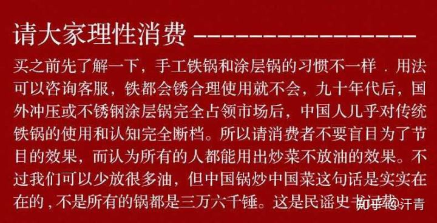
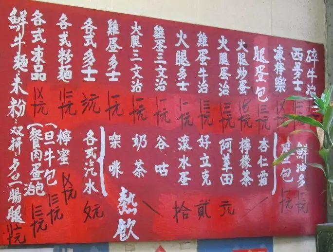
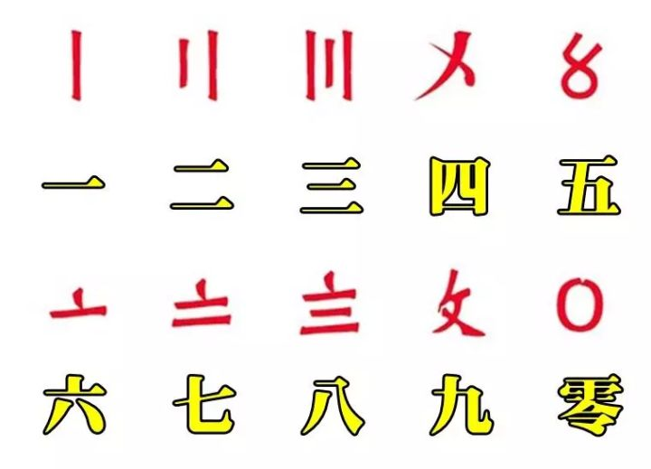

食味真伪
“难以吃到以前那样令人开心的食物了”，是我最近消费时的感受。那又是什么原因造成的呢？下面的四篇文章，可以带来不少的思路。另附一篇"苏州码子"，增加日后去港府点菜的知识水平。
你是否在吃伪装的传统食物？
原文摘录：
- 现状：随着社会分工程度越来越高，这个世界上有更多的人从准备食物的劳作中解放出来，同时对食物的不信任以及焦虑水平也在水涨船高。人们一边传播着关于食物的各种好坏传说，一边把自己前辈无法想象的工业化生产的食物送进嘴里。…… 食客不知原料来自何处，也不知食物从原料到成型过了多少道手。
- 人们的反应：无论东方西方，人们都爱把健康问题归咎于吃得不好。…… 在捧杀与棒杀间，食物有苦难言。
- 迈克尔·波伦的问题是：从什么时候起人们不再拥有“吃什么”的知识？
- 迈克尔·波伦认为，真正的食物正从超市的货架上消失，取而代之的是各种“营养食品”。“营养食品”伪装成传统食品，但充满着各种令人看不懂的成分。……按照科学要求添加某些成分，因此可以在标签上宣称对人体有好处。…… “营养食品”的来源是营养主义，科学家在过去几个世纪探索人类食物的构成，将其分解为蛋白质、脂肪和碳水化合物，以及微量营养成分比如维生素和矿物质。
- 应该吃什么？：在超市里堆积的都不是“食品”的年代，人们应该吃什么呢？迈克尔·波伦的建议是“不要吃你的祖母不认识的食物”，甚至是“不吃任何连新石器时代的祖先都未曾承认的东西”，还要“避开印有健康声明的食物产品”。总之，避开现代西方的饮食，更多地拥抱自己家庭的传统饮食——法国的、意大利的、希腊的、日本的⋯⋯花更多的时间了解食物的生产甚至自己生产食物，不要忘记要种好粮食和果蔬就要花费心血和劳作。
- 吃是个力气活儿：作者可能没有足够勇气告诉读者：良好饮食没有简单容易放之四海而皆准的法则。人们必须自幼年时代起不断地学习关于农产品的知识和烹饪技巧，不断地在自己的生活中加以实践，就像我们的母亲和祖母那样，要想吃得好，就得付出大量的时间和精力。
Max：
食物生产工业化解决了食物不足、流通困难等诸多问题，为我们带来了足量的、种类丰富的食物，同时又让食物变得不像是食物。果蔬肉类的口感退化，人造食物的营养问题，食物生产环节对自然的破坏，过度捕获造成的物种种群衰减甚至灭绝。怎么吃、吃什么看似只是一个营养学问题，实际上是经济问题、生产问题、环境问题、人与自然的关系的选择问题。
过去三十年，中国变得越来越"重口味"
原文摘录：（注意，每一句摘录都可能来自不同的嘉宾）
- “如果要用一个词来形容中国在过去三十年，尤其是最近十年的变化，那就是‘重口味’，不管是在饮食，还是文化，还是各个方面，整个国家都在变得‘重口味’”。
- 今天中国的专业厨房的制度化，就是纯粹要走能够大量和快速地生产，所以就产生了非常多的问题。
- 我要去了解中菜的专业制度，教一般人怎么样能够更专业地做好。结果我发现中菜的专业做法，在家里几乎是不能够复制的。
- 每一个餐厅里面，后厨都有一大锅油，每一样东西不是焯个水就是过个油 …… 因为过油不会氧化，颜色就最鲜，又油亮，保持脆，熟度刚刚好。
- 很多调料都是现成的，这个汁那个汁倒下去就好了。我们在家里怎么可能有一锅油让你每一样东西都这样过一下？
- 他们用的油和用味精用盐的量不是普通的多，专业的厨师他跟你说我这边用一点点味精，那个一点点可能就是一整大勺。
- 现在有很多大型的食品公司做酱料的，这些公司赞助了很多厨艺学校，还有 …… 很多年轻的厨师就感觉这个公司是先进的，是正当的，是好的。很多小厨师从他们在厨艺学校里面就接受到这一套。…… 那些菜谱，都不是在教你用简单的葱姜蒜、豆瓣酱、甜面酱，都是加这个麻辣汁、酸辣汁、鸡粉、鸡汁，全都是用汁，你不用那个的话根本做不出来了。
- 说专业厨房的火候特别好，因为他们的炉火大，…… 很多老师傅都跟我讲，麻婆豆腐就是要小火，就是要慢慢地来，慢慢的推，慢慢的推，所以家里面那个小锅最好炒了。
- 现在的师傅，他还要再加一勺红油，让它更油更香更辣更亮，视觉味觉各方面的刺激要做到最高点。这种方法在餐厅里面已经成为常态，在家里面我觉得是完全没有必要，而且是努力避免。
- 就是所有的东西都是重口味，从文化上，从影视到吃都是重口味，整个国家都变得很重口味。
- 整个国家的口味都变得很重，都喜欢川菜，都喜欢湘菜，而且川菜都变了。我二十年前吃到的川菜跟现在完全不一样，油也多了，辣也重了。
- 人家就说现在是口味多样化，我没有觉得。我就觉得你说的，反而是口味单一化。
- 什么沙县小吃，全国都可以看到，我觉得这件事情很搞笑。然后每个旅游的地方全都是烤串，烤鱿鱼，台湾香肠。而且那个东西很奇怪，又是加了辣的。
- 这一方面是大公司要赚钱，追求效率。…… 他们用化学的方法来做出你喜欢的那个味道，下了很多的氨基酸，非常单一的，不是一个老母鸡炖出来的那种圆满饱满的感觉。
- 他如果要扩张就要复制，最快的复制一定是重口味比轻口味好复制。
陈晓卿：其实你已经忘记故乡的味道
原文摘录：
- 故乡是什么？
- 比起故乡的样貌，人们更容易记住的是故乡的口味。
- 故乡的味道首先是地理意义上的，它标识着你的归属，每个人都站在自己建立的食物鄙视链的顶端。这种归属感牢不可破，尤其是以有风味的经济发达地区为代表。
- 故乡味道还证明着你口味的正宗，如果你对自己故乡的食物有着清晰的记忆，那么在一个饭局上，尤其是和你的口味正好吻合的饭局上，你就有了绝对的话语权。
- 故乡的味道不仅仅是空间意义上的，也是时间意义上的，和你的记忆，你的成长有关。
- 每个人一直有两个故乡，一个是空间的故乡，一个是时间的故乡。
- 与其说他们（Max：写故乡的作家们）在怀念故乡的食物，不如说他们在回忆自己的成长。所以有人说得好，回的去的叫家乡，回不去的才叫故乡。
- 近四十年来，中国正经历巨变。一方面，无数人的故乡不复存在，或者变得面容整齐划一；近四十年来，中国正经历巨变。一方面，无数人的故乡不复存在，或者变得面容整齐划一。
- 第一个是食材。食材的生长期随着商业需求而人为的缩短，风味物质积淀永远没有办法和从前相提并论，这让我们吃到的肉不再香，菜不再甜。
- 第二中国传统烹饪技术也受到了很大的冲击。由于要降低商业成本，很多的食物被集中起来，在一个叫“中央厨房”的地方进行预加工。
- 第三，同时改变的还有与食物相伴的商业传统：曾经让人留恋的，烟火气很重的小店都被日益刷高的租金赶到了城乡结合部；大都市里的排挡也都因为“创卫”缩到了一个一个钢筋水泥的建筑中。
- 味觉记忆挥之不去。我们曾经的饮食习惯、偏好，甚至经历过的时代，无一例外地遗落在我们饮食的DNA里。
- 我和团队曾经复盘之前做过的美食纪录片，在分分钟收视率图表上，“观众最喜欢的食物”排行榜，排在第三位的是油脂类食物，第二位是主食， 第一位是……主食包裹油脂类食物。这可能与流行的饮食风尚有差异，但我知道，某种意义上这正是我们寻找的答案。

三万六千锤、铁锅、菜刀和手工制品之乱象
- 在绝大部分领域和场合下，机制产品远远好过手工制造，尤其是纯手工制造。例外的寥寥无几。
- 那么为什么还会有这么多手工产品呢？绝大部分原因是因为机制成本太高，或者干脆无法机制。
- 尤其是有文化传承的手工艺产品，你还不能改工序，要完全机制势必要改工艺和工序，那结果会很不一样，产品呈现差异会很大，也就不是原来那个东西了。凡是文化产品，都有自己的一套美学逻辑和人文色彩在里面，一动就容易出大问题，不是那么容易动的。
- 那么机器制造的最大核心内容又是什么呢？就是机制产品品质的一致性，也就是高水准的品控能力，这是手工无论如何也做不到的。

在香港马路上餐厅内看到这个报价，知道是啥吗？
- 字体叫花码，香港街头巷尾的老店至今还在使用，只要是商户标示价钱，必然使用，是其中一种数目字。
- 在香港澳门还是原汁原味完整保留，随着阿拉伯数字的盛行，在香港90后很多也不会看了，所以香港一些学校还是有一套完整的花码教学，但不叫花码，而是叫中国数码。
